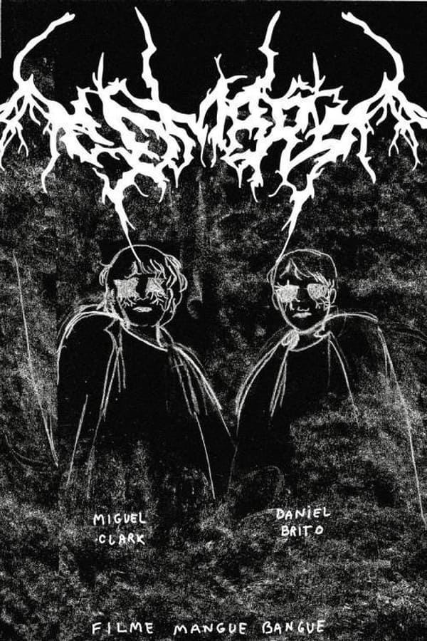

O Enigma das Sombras" promete envolver o público em um suspense psicológico intrigante
Em um anúncio surpreendente, o estúdio de cinema XYZ divulgou detalhes sobre seu próximo lançamento, um thriller psicológico intitulado "O Enigma das Sombras". O filme, dirigido pelo renomado cineasta Daniel Silva, promete levar os espectadores a uma jornada repleta de mistério e suspense.
"O Enigma das Sombras" conta a história de Emma Thompson, uma renomada psicóloga forense especializada em investigar casos de distúrbios mentais. Interpretada pela talentosa atriz Emily Johnson, Emma é conhecida por sua capacidade de decifrar a mente humana e revelar segredos ocultos.
No entanto, tudo muda quando Emma recebe um desafio incomum. Ela é chamada para investigar um caso misterioso de um paciente internado em um hospital psiquiátrico de alta segurança. O homem, interpretado por John Roberts, afirma ser inocente de um crime terrível, mas sua história está repleta de contradições e lacunas.
Conforme Emma mergulha mais fundo no caso, ela se vê envolvida em uma teia de mentiras e segredos sombrios. Sua busca pela verdade a leva a enfrentar seus próprios demônios internos e questionar sua própria sanidade. O filme explora temas profundos relacionados à identidade, memória e o lado mais obscuro da psique humana.
"O Enigma das Sombras" é repleto de reviravoltas imprevisíveis e cenas de tirar o fôlego, mantendo o público no limite de seus assentos. Com uma atmosfera intensa e uma trilha sonora arrepiante, o filme cria uma experiência cinematográfica imersiva e perturbadora.
Além do elenco principal, o filme também apresenta performances cativantes de atores talentosos como Julia Mendes e Michael Anderson, que interpretam personagens-chave na trama intricada.
Com o lançamento previsto para o final deste ano, "O Enigma das Sombras" promete ser um dos grandes destaques do gênero suspense psicológico. Os fãs do cinema estão ansiosos para mergulhar nessa jornada enigmática, cheia de reviravoltas e revelações perturbadoras, enquanto desvendam o mistério que se esconde nas sombras.